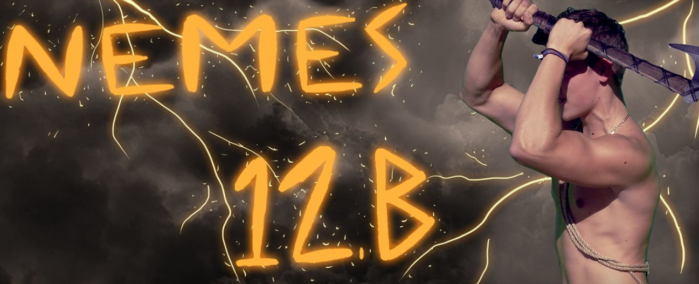

A matematika iránti érdeklődésem verseny eredmények formájban is megmutatkozott: Az OKTV , Zrínyi/Gordiusz, Bolyai , Kenguru matematikai versenyeken kiemelkedő helyezéseim voltak.
Gimnáziumi végzős évemben a z osztályom engem jelölt a Király jelölt szerepre azaz a többi végzős királyjelöltel kellet versenyezzek az iskola királya címért.
Ez több ízben próbára tette osztályunk és engem is , megtanultuk a csapatmunka rejtelmeit, és a hatékony időbesztást.
Van 2 idősebb bátyám és egy nővérem jelenlegi életkoraik (2020.05.21.) 34,30,29 tőlük sokat tanultam az életem során a szüleim mellet rájuk is mindig számíthatok ez nagy befolyással volt rám.
Születtem: Székesfehérvár, 2000 07. 21.


vissza